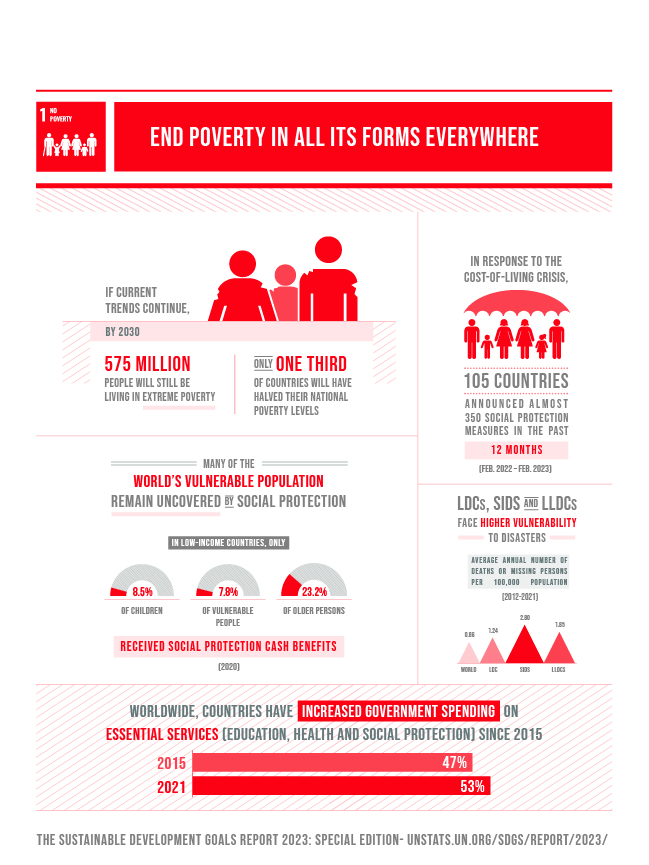
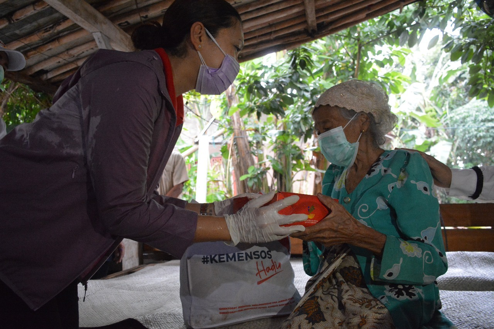
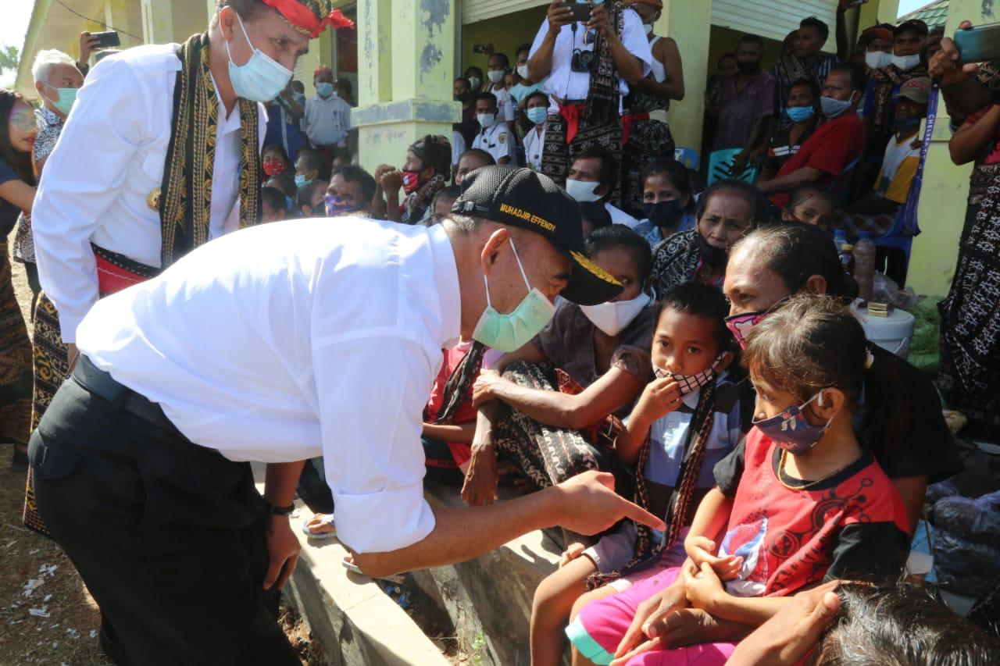

  
Kemiskinan adalah kondisi dimana seseorang tidak dapat/ mampu untuk memenuhi kebutuhan dasar yang dibutuhkan dalam kehidupan yang layak dan bermartabat. Dalam kondisi ini kemiskinan dalam sudut ekonomi, juga berkaitan dengan hak - hak dasar yang seharusnya diterima oleh setiap individu. Meskipun di Indonesia terjadi pertumbuhan ekonomi, angka kemiskinan di Indonesia sangatlah tinggi dan dapat kita lihat di mana saja kita pergi.
Dalam isu global, kemiskinan terus terjadi terutama tengah krisis ekonomi, perubahan iklim yang terus meningkat. Menurut laporan PBB, kemiskinan global mengalami peningkatan signifikan. Situasi ini terpicu karena krisis biaya hidup yang membuat jutaan orang jatuh dalam kemiskinan dan kelaparan. Secara keseluruhan sekitar 1,7 miliar masyarakat di dunia kini tergolong miskin. Peningkatan ini juga semakin parah oleh dampak pandemi COVID-19 pada tahun lalu yang memperlemah ekonomi banyak negara.
Di Indonesia yang merupakan negara berkembang, kemiskinan merupakan salah satu isu penting yang perlu ditangani. Angka kemiskinan di Indonesia selama 5 tahun terakhir masih cenderung tinggi, diperberat dengan adanya pandemi COVID-19. Untungnya pada Maret 2024, angka kemiskinan mengalami penurunan menjadi 9,03 persen, menurun 0,33 persen poin dari Maret 2023. Agar dapat menetapkan angka kemiskinan terus turun diperlukan kewaspadaan dan kesiapan masyarakat dalam menghadapi berbagai masalah perekonomian. Seluruh masyarakat Indonesia harus ikut berpartisipasi agar kemiskinan dapat dihentikan. Dapat dimulai dengan menggunakan formula 40-30-20-10, 40% gaji untuk kebutuhan sehari - hari, 305 untuk usaha atau membayar cicilan, 20% untuk tabungan, dan 10% untuk sedekah. Kita juga harus mulai mengendalikan gaya konsumtif agar tidak terbuang - buang. Akan juga dibutuhkan berbagai kebijakan dan usaha dari berbagai sektor pemerintahan.
Indikator utama dalam pemberantasan kemiskinan:
Pemerintah mengalokasi anggaran digunakan untuk mendanai program - program sosial, seperti bantuan tunai langsung, program keluarga harapan, dan subsidi pangan.
Ketersediaan layanan dasar dalam pendidikan dengan beasiswa dan sekolah gratis, kesehatan melalui BPJS Kesehatan, dan perlindungan sosial.
WHO dibangun oleh Amerika bertanggung jawab dalam menangani kesehatan global. Masyarakat miskin ikut terlibat dalam kegiatan ekonomi produktif, seperti pelatihan kerja dan pemberian akses permodalan melalui program Kredit Usaha Rakyat.
Pembangunan jalan, listrik, air bersih, dan fasilitas yang mendukung di daerah terpencil untuk meningkatkan kesejahteraan masyarakat.
Program - program yang fokus pada pemberdayaan masyarakat melalui peningkatan keterampilan kerja, kewirausahaan, dan pendidikan untuk membantu mereka mandiri.